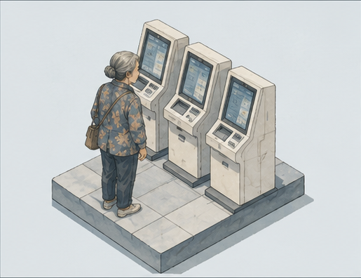
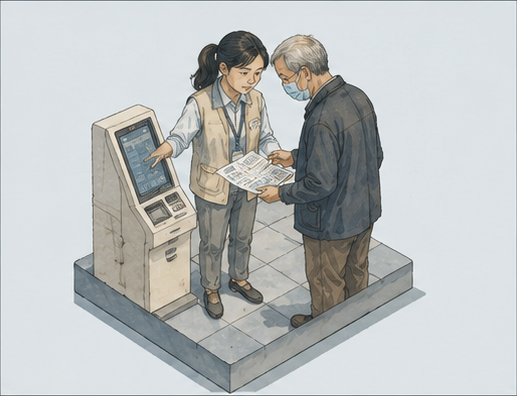
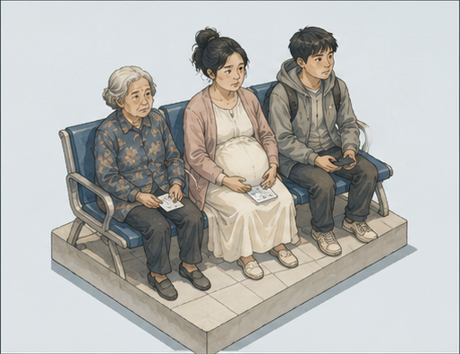
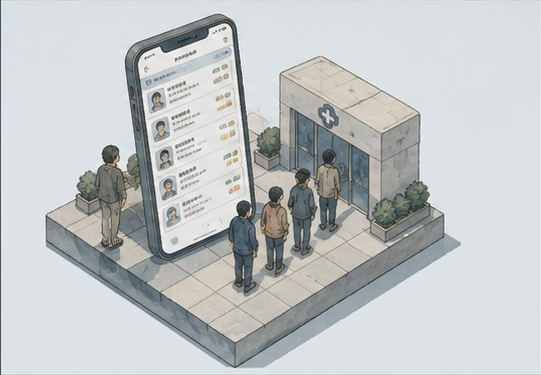

陪诊师，是为就医人群提供全程陪同、医疗手续代办的服务从业者。完整服务链条覆盖线上挂号、院区楼层导航、排队候诊、缴费打印单据、陪同检查、代取药品、病历整理等全流程，市场拆分出半日简陪、全天全程陪诊、单项专项代办三类服务。
从服务需求数据来看，院内排队、挂号缴费代办是订单占比最高的基础服务；针对老年群体的搀扶陪同、检查报告解读需求紧随其后；麻醉陪护、产后复诊陪同属于小众细分订单。
数说陪诊师行业的兴起与忧虑

三甲医院光亮冷白的大厅里，李奶奶扶着自助挂号机屏幕，眯着眼一遍遍地滑动手机屏幕。
交错分布的门诊楼长廊挤满往来就诊的人群，她攥着病历单来回张望，想找个人问问检验科在哪，来往行人步履匆匆，没人停下脚步搭话，背影里藏着化不开的无力与茫然。
老伴去世后，李奶奶便独自过日子，如今常年往返医院复诊，早已习惯凡事自己硬扛。
“没办法，子女都在外地工作，老伴也分开多年，看病这点小事，总不能次次麻烦小辈。”她语气平淡，并不怨怼孤身一人的处境。
“字看不清，楼找不到，拍片、取药散在好几栋楼，一趟跑下来腿都抬不起来，自己实在撑不住。”
说这话时她望着远处穿梭的陪诊人群，布满皱纹的脸上没有太多波澜，只是眼底藏着难以掩饰的孤单。
正如李奶奶一样，独居青年、待产孕妇等不同群体，都在繁琐冰冷的就医流程面前手足无措，一个人去看病已经成为一种普遍的社会现象与困境。
陪伴缺位、医院流程繁复叠加，催生了一门全新的职业——陪诊师。当身边无人相伴，人们开始转向平台下单，花钱买下一份医院里的陪同与照料。

陪诊师，是为就医人群提供全程陪同、医疗手续代办的服务从业者。完整服务链条覆盖线上挂号、院区楼层导航、排队候诊、缴费打印单据、陪同检查、代取药品、病历整理等全流程，市场拆分出半日简陪、全天全程陪诊、单项专项代办三类服务。
从服务需求数据来看，院内排队、挂号缴费代办是订单占比最高的基础服务；针对老年群体的搀扶陪同、检查报告解读需求紧随其后；麻醉陪护、产后复诊陪同属于小众细分订单。
陪诊服务价格随城市层级拉开明显差距，一二线三甲聚集城市单价远高于三四线。数据显示，三级医院自主预约单次陪诊均价387元，平台机构标准化陪诊均价300元，仅仅是院内导诊、排队跑腿的服务费，几乎等同于普通人一次门诊就诊开销。
薪资层面，一线城市全职陪诊收入上限更高，订单稳定；三四线城市多以兼职副业为主，收入波动极大，淡旺季收入差距明显。
结合智联36份行业招聘样本与商业调研报告，清晰勾勒出陪诊从业者的统一轮廓：行业95%岗位不要求本科学历，六成岗位无相关从业经验限制，入行门槛极低；从业者女性占比高达83%，但持有医护专业背景的从业者仅17%，绝大多数人没有系统医疗知识储备。
低门槛的准入规则吸引大量兼职人群涌入市场，也直接埋下行业隐患：多数从业者仅能完成跑腿代办，无法为老人、慢病患者提供专业医疗建议，服务质量参差不齐。
而这项陪护服务的定价却并不亲民：三级医院门诊次均387元，机构陪诊均价300元，单是院内导诊跑腿的费用，几乎追上看病本身的花销。

78岁的独居王大爷患有冠心病，每月都要去三甲医院复诊调药。子女定居外地，一年难得回家一次。他曾试着独自去医院看病，提前两小时抵达门诊，却对着闪烁屏幕的自助挂号机手足无措，反复摸索扫码、签到、取号流程，折腾许久依旧操作失败，最终错过当日叫号，只能空手而归。
这是无数独居老人就医的真实缩影。如今老龄化加剧、人口持续外流，传统子女贴身照料、家人相伴就医的模式慢慢淡出生活。
对于绝大多数独居老人，高龄带来的视力模糊、行动迟缓、接受新事物能力减弱，让现代化就医流程成了难以跨越的门槛。不会线上预约挂号、分不清医院楼栋科室、看不懂密密麻麻的检查单据、多层楼往返检查体力透支。慢性病缠身的老人需要月月复诊，频繁的就医需求，无人搀扶、无人跑腿、无人解读医嘱，让看病变成费力又无助的难事。正因如此，独居银发老人成为陪诊行业最稳定、最刚性的消费群体。
除老年群体外，陪诊服务也覆盖着一众弱势就医人群。异地打拼的年轻上班族，孤身无依，麻醉、手术无人签字陪护；孕期女性频繁产检，身体负重奔波劳累；术后康复患者行动受限，无法独立完成缴费、检查、取药全套流程。不同年龄、不同处境的人群，共同催生了庞大的陪诊市场。
从前看病，一家人陪同往返，是最寻常的生活画面。但如今城市化流动加剧，大量年轻人奔赴大城市求学、就业，常年异地生活，无法贴身照料留守家乡的老人。
大多数空巢老人的就医陪护成为无法自我解决的难题。生病无人陪伴、复诊无人陪同，原本由家庭承接的照料缺口，日复一日持续扩大。
当子女陪护缺位成为常态，传统家庭照料体系难以兜底，人们开始转向市场寻求帮助。正是这份普遍的社会空缺，让陪诊服务变成适配大众需求的民生服务行业。
全国千人医师数量从2000年1.68增长至2024年3.61，但对比发达国家仍存在明显差距，人均医疗资源整体偏紧。2024年全国总诊疗人次达101.5亿，执业及助理医师约466万人，平均每位医师年接诊超两千人次，日常门诊工作量趋于饱和。
医疗资源地域分布极度不均，一二线城市三甲医院常年人满为患、门诊超负荷运转。医护人员精力全部集中在诊断、治疗等核心医疗工作上，没有多余时间和人力，为患者尤其是老年患者提供引导陪护、流程指导等附加服务。
与此同时，医院全面推进数字化就医，线上挂号、自助缴费、多楼栋分流就诊，大幅提升了医院运转效率，却把复杂的操作压力全部转移给患者。对于不熟悉智能手机、不了解医院布局、跟不上数字化节奏的老年人来说，便捷的智慧医疗，反而成了阻隔他们顺利就医的无形高墙。
2012至2024年，国内老年人口持续增长，空巢、独居老人规模逐年扩大。老年群体慢性病高发，高血压、糖尿病、心脑血管疾病都需要长期监测、定期复诊、持续用药，就医频次远高于其他年龄段人群。
高频的就医需求，叠加全程无人陪伴的困境，持续拉升陪诊行业的市场需求。第七次人口普查数据表明，国内绝大多数独居老人可以安稳打理晚年生活，却难以适配繁琐、智能、快节奏的现代就医体系。能独立生活，却难以独立就医，这也是当下陪诊行业持续兴起最真实、最核心的社会底色。

早些年，陪诊只是普通人的零散副业。不少兼职者依靠社群、朋友圈私下接单，没有固定流程、没有统一价格，服务全凭个人经验与责任心。
家住二线城市的兼职从业者小周回忆，最初接单大多是帮独居老人挂号、取单、跑腿。服务内容简单、客源零散，属于偶然式的便民帮忙，并未形成完整业态。
随着独居就医需求持续增加，零散私单难以承载庞大市场缺口。互联网平台集中入场，将分散的个体从业者统一整合上架，把“陪同看病”变成线上可直接挑选、下单、评价的标准化服务。陪诊从此告别私人跑腿模式，正式走向产业化、商业化。
行业发展清晰分为三个阶段：个人零散接单阶段、平台野蛮扩张阶段、监管逐步规范阶段。国内陪诊相关注册企业逐年递增，市场规模持续扩容。
快速发展之下，区域供需失衡问题愈发明显。一二线城市三甲医院集中、需求旺盛，陪诊从业者扎堆涌入，市场内卷严重；而三四线城市与县域医疗资源分散，专业陪诊人员稀缺，当地患者即便有消费意愿，也难以找到可靠服务。
产业快速扩张的背后，行业规范没能同步跟上，不少就医群众都踩过行业乱象的坑。
独居老人陈奶奶曾在私单渠道预约低价陪诊，页面标注全程陪同就诊，实际从业者只帮忙排队取号，服务大幅缩水，可线上私下交易没有售后渠道，老人只能自认吃亏。
刚毕业的小吴也曾踩过培训的陷阱，他花费数千元报名所谓专业陪诊课程，整期培训只教基础跑腿流程，完全没有医疗常识、突发状况应急处理相关内容，课程含金量极低。
市场里两类供给的宣传导向截然不同：个人私单主打低价灵活，用挂号、代办跑腿吸引老年客源；线上平台招工时主打时间自由、兼职增收，大批量吸纳没有医疗相关经验的新人。两者收费模式、服务范围没有统一界定，服务好坏全凭从业者个人自觉。
陪诊培训市场定价也十分混乱，价格断层明显：人社部能建中心收费998元，普通商业培训机构定价2000—3000元，头部机构如橙医达到2980元。国内目前没有统一官方从业资质，各家机构的授课内容、考核标准互不认可，不少新人经过几天速成培训就能上岗，专业水平参差不齐。
平台给陪诊服务套上了标准化商品的外壳，完成了商业化包装，却没能搭建起完善的行业约束规则。这份野蛮生长的代价，最终都落到了前来就医的普通人身上。

陪诊师行业的兴起，表层只是一门新兴职业诞生，往深处看，它照见了三层无法回避的社会现实：医疗数字化升级把弱势个体落在流程身后；城市独居、人口流动重塑社会关系，让贴身陪伴变成明码标价的消费品；当家庭照料、公共兜底双双缺位时，人们只能转向市场购买照护服务。
市场总能捕捉民生缝隙催生生意，但人的情感与基础就医保障，不该完全交由市场承担。在市场化服务与公共普惠服务的落差之间，站立着每一个独自就医的普通人。
28岁北漂白领小陈深有体会，他预约无痛胃肠镜，医院明确要求麻醉后必须有家属陪同签字护送，父母远在老家、身边无亲友，无奈在平台下单半天陪诊服务。
独自居住的孕中期孕妇林女士，每一次产检都要独自往返产科、抽血室，拎着检查单挤人群上下楼梯，体力难以支撑，长期按月购买陪诊。
退休独居老人张叔不会操作线上挂号、自助机缴费，每次复诊都要提前预约陪诊师带路。
年轻人、孕产妇、老年群体，不同年龄层的人，共享着“无人陪同就医”的窘迫。
医疗系统数字化改造，大幅提升医院运转效率，却没有为适应能力弱的人群留出缓冲空间。不会使用智能设备、行动不便、孤身一人的群体，直接被繁琐流程困住，陪护需求由此爆发。
人口流动与独居常态化，瓦解了传统家庭照料体系。异地务工、单身独居、少子化成为常态，身边缺少能搭把手的亲人，本该由家庭承接的照护，出现巨大缺口。
本应兜底补位的公共普惠陪护，供给严重不足。社区公益陪护名额有限、预约周期长，无法满足大众日常、高频的就医陪护需求，公共服务的空白，直接催生商业化陪诊赛道。
陪诊师可以解决就医流程上的全部难题，却无法消解独自就医时的慌张、孤单。市场能填补服务缺口，却替代不了家庭温情与普惠公共保障。生意诞生于民生缝隙，但兜底普通人就医的陪伴，不该只能花钱购买。
从独自等待麻醉手术的年轻人，到独自奔波产检的孕妇、看不懂就诊流程的老人，陪诊产业的火爆，是医疗升级、家庭结构变迁、公共服务供给不足共同催生的结果。当基础的就医陪伴沦为货架上可下单的商品，行业热度背后，是全年龄段人群无处安放的就医无助。付费陪诊只能解一时之急，完善普惠医疗陪护、补齐公共民生照料短板，让所有人不必花钱就能拥有就医兜底，才是需要长期推进的社会命题。